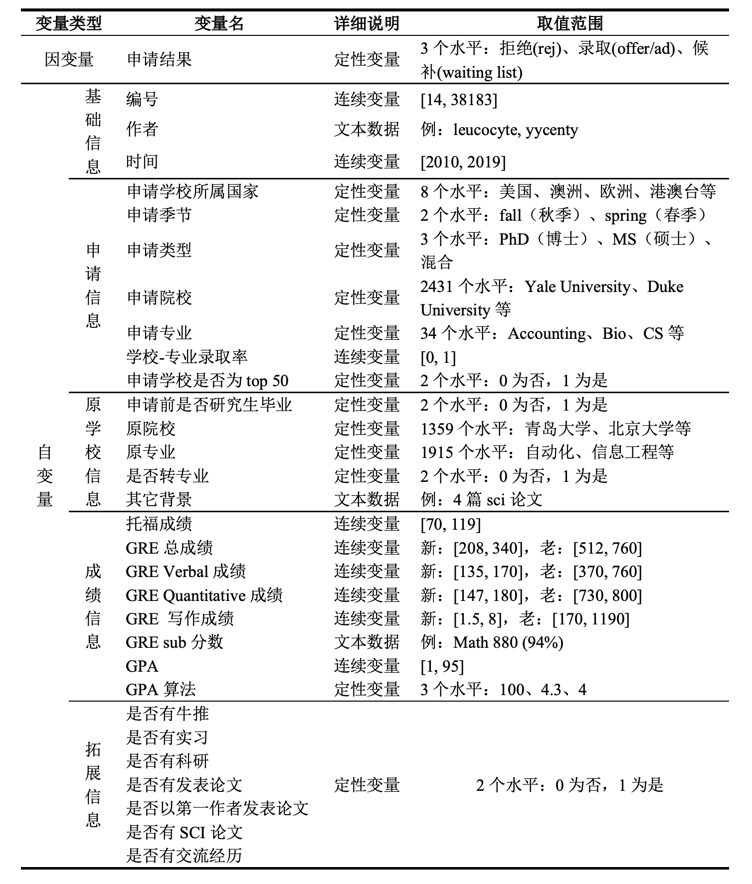
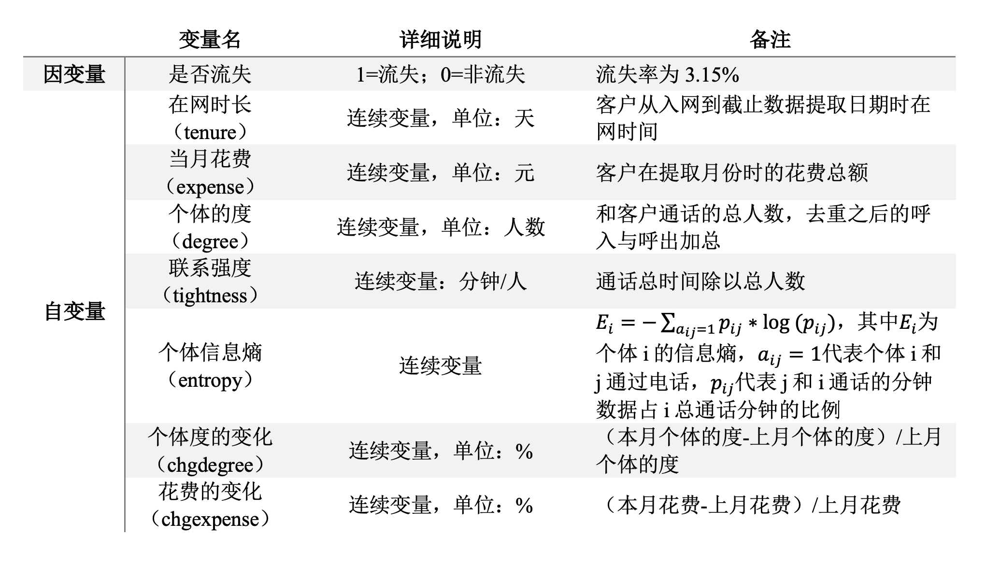

第7章：逻辑回归
### 数据准备 ###
# 清空工作空间
rm(list = ls())教程案例
案例背景
近十年来，出国留学已经列入越来越多的同学的“未来规划清单”，根据教育部数据，2018年在我国出国留学人数66.21万人，同比增长8.83%。其中，自费留学人数占比最多，达59.63万人，占总留学人数的90%，国家公派3.02万人，单位公派3.56万人。从留学生选择留学国家/地区来看，留学目的地选择多样化，美国依旧是留学人群最喜欢的留学国家，英国增幅明显。数据显示，2019年留学生选择美国的人数占比下滑，为43%。而选择英国的群体占比在2019年大幅上升，占比41%，同美国差距正在缩小。但是，留学申请本身不是一件容易的事——不仅需要准备文书、英文考试，还要从上百个学校列表中选出合适自己的高校。若能最有效地提升背景，就更有可能获得“dream school”录取。
本章使用一个留学申请数据集，该数据来自某留学申请论坛的录取汇报结果，包含了15908条申请者的申请学校及录取与否信息。

## 设置绘图主题
library(ggplot2)
plot_theme_pie <- theme(panel.background = element_rect(fill = rgb(255, 255, 255, maxColorValue = 255)),
plot.background = element_rect(rgb(255, 255, 255, maxColorValue = 255)),
axis.text = element_text(color = rgb(236, 241, 249, maxColorValue = 255)),
panel.grid.major = element_line(color = rgb(236, 241, 249, maxColorValue = 255)),
panel.grid.minor = element_line(color = rgb(236, 241, 249, maxColorValue = 255)),
plot.title = element_text(family = "Hei", face = "bold", size = 14),
legend.title = element_text(family = "Hei", face = "bold",size = 12),
legend.text = element_text(family = "Hei",size = 11)) # 饼图绘制主题
## 设置绘图主题
plot_theme <- theme(panel.background = element_rect(fill = rgb(255, 255, 255, maxColorValue = 255)),
plot.background = element_rect(rgb(255, 255, 255, maxColorValue = 255)),
axis.text = element_text(size = 12,family = "Hei"),
axis.text.x = element_text(size = 12, family = "Hei", face = "bold") ,
axis.text.y = element_text(size = 12, family = "Hei", face = "bold") ,
axis.ticks = element_line(color = rgb(236, 241, 249, maxColorValue = 255)),
axis.title = element_text(size = 13, family = "Hei"),
panel.grid.major = element_line(size = 1),
panel.grid.minor = element_line(color = rgb(236, 241, 249, maxColorValue = 255)),
plot.title = element_text(family = "Hei", face = "bold", size = 14),
legend.title = element_text(family = "Hei", face = "bold",size = 12),
legend.text = element_text(family = "Hei",size = 11)) # 其他图形绘制主题任务一
读入数据Data_Cleaning.csv，命名为descriptive，将数据按照变量 index_origin（原始编号）由小到大排序。查看变量 offertype（录取结果） 的类型。为简化研究，将录取类型“AD小奖”、“Offer”、“AD无奖”统一为 “Admitted”，将录取类型“Rej”修改为“Rejected”，并删去缺失录取结果的样本。根据录取结果绘制饼状图，描述你观察到的结果。
## 读入数据
descriptive <- read.csv("./data/Data_Cleaning.csv", header = T, stringsAsFactors = F) # 读取原始数据
descriptive <- descriptive[order(descriptive$index_origin),] # 将数据按照变量index_origin（原始编号）排序
## 调整变量类型
descriptive$offertype[descriptive$offertype %in% c("AD小奖", "Offer", "AD无奖")] <- "Admitted" # 不考虑奖学金，均归入“Admitted“（录取）
descriptive$offertype[descriptive$offertype == "Rej"] <- "Rejected"
descriptive <- descriptive[ - which(descriptive$offertype == ""),] # 删去缺失录取结果的样本## 绘制饼状图
(piechart1 <- ggplot(descriptive, aes(x = factor(1), fill = factor(descriptive$offertype))) +
geom_bar(position = "fill", width = 1) +
scale_fill_manual("申请结果", values = c("grey","gold","skyblue")) +
coord_polar(theta = "y") +
labs(x = "", y = "", title = "\n录取类型") +
plot_theme_pie)
数据中，录取的案例占一半以上，其中包括无奖录取、小奖录取和全奖录取，拒绝的申请占比为27.6%，还有少部分申请结果为Waiting List。在后续的建模中，将把Waiting List划分为拒绝类别。
任务二
我们先来看热门的申请学校（college_apply）。由于数据存在错误，我们需要对申请学校这一变量进行简单修正：将学校名“Texas A”、“M University”替换“Texas A&M University”，将“Washington University in St”、" Louis“替换为”Washington University in St. Louis"。随后，为了统一申请学校名称，我们要将学校缩写替换为全称，得到的新变量College_apply_new 并入原数据（注意：不考虑缩写字母的大小写差异，需要借助文件美国大学缩写汇总.txt）。根据统一后的学校名称，找出申请人数最多的10所热门学校。
## 修正数据
descriptive$college_apply[descriptive$college_apply %in% c("Texas A", "M University")] <- "Texas A&M University"
descriptive$college_apply[descriptive$college_apply %in% c("Washington University in St", " Louis")] <- "Washington University in St. Louis"
## 统一学校名称
SuoXie <- read.table("./data/美国大学缩写汇总.txt", header = T) # 读入常见的美国大学缩写汇总
college_apply_new <- NULL # 设置初始值
college_low <- tolower(descriptive$college_apply) # 不考虑大小写差异（下同）
suoxie_low <- tolower(SuoXie$ysuoxie)
for(i in 1:dim(descriptive)[1]){ # 统一全称和缩写
if (college_low[i] %in% suoxie_low) {
college_apply_new[i] <- as.character(SuoXie$yquancheng[suoxie_low %in% college_low[i]])
} else college_apply_new[i] <- descriptive$college_apply[i]
}
descriptive$College_apply_new <- college_apply_new # 统一学校名称后的新变量
## 找出10大热门学校
(top10_college_apply <- names(sort(table(descriptive$College_apply_new),
decreasing = T)[c(1:10)]))## [1] "University of California"
## [2] "Carnegie Mellon University"
## [3] "University of Southern California"
## [4] "Columbia University"
## [5] "University of Pennsylvania"
## [6] "Northeastern University"
## [7] "University of Illinois at Urbana-Champaign"
## [8] "University of Michigan"
## [9] "Cornell University"
## [10] "Texas A&M University"任务三
找到10所热门学校后，下一步探究这些学校的录取情况。注意：为简化后续分析，删掉所有录取结果为 WaitingList 的样本，只保留15908条数据。
GPA（标准化考试成绩）是申请的关键之一。用变量gpa除以分制变量gpa_measure，再乘以4.0，可以将GPA标准化为四分制，得到新变量Standardgap并入原数据。考虑到不同排名的学校对学生成绩的要求差异，对申请学校进行排名划分。读入“QS大学排名前百（美国）.txt”，数据集前19所学校是世界前五十名的美国名校，据此将所有申请学校划分为“Top50”和“Others”两类，得到因子型的新变量CollegeRankTop50并入原数据。
接着，考查学业成绩Standardgap和学校排名CollegeRankTop50对录取结果的影响。绘制成绩与申请结果箱线图，并谈谈你的发现。注意，从现实出发，只画出Standardgap>2.0的样本。
最后，将成绩划分为“<=3.4”, “3.4-3.55”, “3.55-3.7”, “>3.7”四类，得到新变量gpa_dis并入原数据。
## 为简化后续分析，删掉录取结果为 WaitingList 的样本
descriptive <- descriptive[-which(descriptive$offertype == "WaitingList"),]
## 按学校名称匹配大学排名
universities <- read.table("./data/QS大学排名前百（美国）.txt",header = F, sep="\n")$V1 # 读入QS世界大学排名
top50university <- NULL # 变量初始化
for(i in 1:dim(descriptive)[1]){
top50university[i] <- descriptive$College_apply_new[i] %in% universities[1:19] # 共19所美国名校进入世界前五十名
}
## 整理变量
collegerank <- rep("Others",dim(descriptive)[1])
collegerank[top50university] <- "Top50" # 大学排名前50
descriptive$CollegeRankTop50 <- collegerank # 并入原数据
## gpa标准化
descriptive$Standardgap <- (descriptive$gpa/descriptive$gpa_measure)*4 # 将gpa统一整理为4分制
gpa_offertype <- descriptive[, c("Standardgap", "offertype", "CollegeRankTop50")]
gpa_offertype$offertype <- factor(gpa_offertype$offertype, levels = c("Admitted", "Rejected"),
labels = c("录取","被拒")) # 调整因子水平
gpa_offertype$CollegeRankTop50 <- factor(gpa_offertype$CollegeRankTop50, levels = c("Top50","Others"))## 画图
(boxplot1 <- ggplot(gpa_offertype, aes(x = factor(CollegeRankTop50), y = Standardgap, fill = factor(offertype))) +
geom_boxplot(show.legend = T, varwidth = T) +
scale_fill_manual("申请结果", values = c("grey", "gold")) + # 按照申请结果填色
scale_y_continuous(limits = c(2, 4),breaks = seq(2, 4, by = 0.2))+ # 不考虑gpa<2.0的样本
labs(x = "申请学校的世界排名", y = "GPA", title = "成绩与申请结果") +
plot_theme)
## 成绩分段
descriptive$gpa_dis <- cut(descriptive$Standardgap, breaks = c(0, 3.4, 3.55, 3.7, Inf),
labels = c("<=3.4", "3.4~3.55", "3.55~3.7", ">3.7"))结论：申请 Top50 学校时，录取的学生平均GPA（中位数）较高。申请其他学校时，GPA差异不明显。而从波动程度来看，无论是申请Top50还是其他学校，录取同学的GPA的差异都比未录取的GPA差异大，说明高GPA不一定是录取的必要因素。
任务四
托福成绩也是申请时至关重要的一环。将变量toefl转化为数值变量，随后划分为“<=98”, “98-102”, “102-106”, “>106”四个分数段，得到因子型的新变量toefl_dis并入数据。计算不同排名的学校在各分数段的录取率，绘制复式条形图。注意标注出录取率百分数，并添加一条平均录取率作为参考线。从图中你能得到什么结论？
## 整理托福成绩
descriptive$toefl <- as.numeric(descriptive$toefl) # 将托福成绩信息变为数值型
descriptive$toefl_dis <- cut(descriptive$toefl, breaks = c(0, 98, 102, 106, Inf),
labels = c("<=98", "98~102", "102~106", ">106"))
## 计算录取率
ifadmitted <- ifelse(descriptive$offertype == "Admitted",1,0)
admittedPct <- aggregate(ifadmitted, list(descriptive$toefl_dis, descriptive$CollegeRankTop50), mean)
colnames(admittedPct) <- c("TOEFL","学校排名","admittedpct")
admittedPct$学校排名 <- factor(admittedPct$学校排名,levels = c("Top50","Others"))### 画图
(barplot2 <- ggplot(admittedPct, aes(TOEFL, admittedpct, fill = 学校排名)) +
geom_bar(stat='identity',position='dodge') +
scale_fill_manual("学校排名", values = c("grey", "gold")) + # 按照申请结果填色
labs(x="", y="", title="\n不同托福成绩的平均录取率") +
geom_text(label = paste(round(admittedPct[order(admittedPct$TOEFL), 3], 2)*100, "%", sep=''),
colour = "black", position = position_dodge(1), size = 3, vjust = - 0.8) +
geom_hline(aes(yintercept = mean(ifadmitted)), col = "orange", lwd = 1)+
geom_text(label = paste(round(mean(ifadmitted), 2)*100, "%", sep=''),
colour = "orange",x = 5.4, y = 0.7, size = 5.7, vjust = - 0.5) +
plot_theme)
结论：对于排名靠前的学校来说，托福成绩越高，平均录取率越高。
任务五
申请博士与硕士需要做哪些准备呢？我们来探究硬件条件对于不同学位（type）申请的影响。硬件条件共包括6个变量：“research”、“paper”、“first”、“sci”、“rl”、“intern”和“exchange”，依次代表科研、论文、一作、 SCI论文、牛推、实习和交换。对这些变量取绝对值后，得到6个0-1变量，0代表不具备某种硬件条件，反之为1。
下面，绘制出硬件条件与申请学位的矩阵图。矩阵的每个元素代表对应学位的所有申请者中，提到自己具备对应硬件条件的人数比例。以（1, 1）元素为例，表示硕士申请者中，提到自己有过交换出国经历的比例为2.8%。注意：利用R包data.table和reshape能够简化矩阵计算；横纵坐标各水平的先后顺序与下图保持一致。从图中你能得到什么结论？
library(reshape)
## 预处理
descriptive$first <- abs(descriptive$first)
descriptive$sci <- abs(descriptive$sci)
## 录取情况与硬件条件
extra_offertype <- descriptive[, c("rl", "intern", "research", "paper",
"first", "sci", "exchange", "type")]
tab1 <- table(extra_offertype$type)
extra_offertype <- melt(extra_offertype, id = "type") # 短表变长表
count <- subset(extra_offertype, extra_offertype$value == 1)
tab2 <- table(count$type, count$variable) # 申请硕博拥有某硬件条件的情况
count_plot <- melt(rbind(tab2[1, ]/tab1[1], tab2[2, ]/tab1[2], tab2[3, ]/tab1[3])) # 学位×硬件条件
count_plot$X1 <- factor(count_plot$X1, levels = c(1, 2, 3), # 调整变量因子水平
labels = c("MS", "PhD", "混合"))
count_plot$X2 <- factor(count_plot$X2, levels = c("research","paper","first",
"sci","rl","intern","exchange"),
labels = c("科研", "论文", "一作", "SCI论文", "牛推", "实习", "交换"))## 绘制硬件条件与申请学位的矩阵图
(matrix1 <- ggplot(count_plot, aes(x = X1, y = X2, label = value, fill = value)) + # 画图
geom_tile(show.legend = F) +
geom_text(label = paste(round(count_plot$value, 3)*100, "%", sep = ''),
color = "black", family = "Hei", size = 4.5) +
scale_fill_gradient("count", low = "white", high = "lightCoral") +
labs(x = "申请学位", y = "硬件条件", title = "") + plot_theme)
结论：申请硕士实习更加重要，申请博士论文更加重要，而混合申请介于两者之间。
任务六
最后，我们将申请结果offertype作为因变量（录取=1，被拒=0），在训练集上建立逻辑回归模型，选取的变量如下：
## [1] "offertype ~ season + type + cross + rl + intern + research + paper + first + sci + exchange + CollegeRankTop50 + gpa_dis + toefl_dis"对数据进行训练集与测试集的划分（0.8: 0.2）。以上述方程在训练集数据上建立逻辑回归模型，对模型进行变量选择（使用AIC准则），并对模型结果给出合理的解读。
## 抽取训练集
set.seed(123) # 随机数种子
nsample <- sample(x = dim(descriptive)[1], size = dim(descriptive)[1]/5, replace = F)
## 重新划分训练集和测试集
descriptive_train <- descriptive[-nsample, ]
descriptive_test <- descriptive[nsample, ]
## 建立逻辑回归模型
myglm0 <- glm(formula, family = binomial(), data = descriptive_train) # 逻辑回归
myglm <- step(myglm0, trace = F) # AIC准则逐步回归
summary(myglm) # 查看回归结果##
## Call:
## glm(formula = offertype ~ season + type + cross + intern + research +
## paper + sci + exchange + CollegeRankTop50 + gpa_dis + toefl_dis,
## family = binomial(), data = descriptive_train)
##
## Deviance Residuals:
## Min 1Q Median 3Q Max
## -2.2248 -1.3354 0.7399 0.8393 1.2347
##
## Coefficients:
## Estimate Std. Error z value Pr(>|z|)
## (Intercept) 1.011348 0.055281 18.295 < 2e-16 ***
## seasonSpring 0.619128 0.171222 3.616 0.000299 ***
## typePhD -0.181237 0.067917 -2.669 0.007618 **
## type混合 0.196544 0.198293 0.991 0.321597
## cross -0.193963 0.058243 -3.330 0.000868 ***
## intern -0.105629 0.061007 -1.731 0.083378 .
## research -0.100875 0.068228 -1.478 0.139276
## paper 0.147290 0.083804 1.758 0.078824 .
## sci 0.187645 0.101877 1.842 0.065492 .
## exchange 0.766762 0.153847 4.984 6.23e-07 ***
## CollegeRankTop50Top50 -0.610473 0.048657 -12.546 < 2e-16 ***
## gpa_dis3.4~3.55 -0.041040 0.058560 -0.701 0.483418
## gpa_dis3.55~3.7 0.169768 0.063009 2.694 0.007052 **
## gpa_dis>3.7 0.378747 0.069661 5.437 5.42e-08 ***
## toefl_dis98~102 -0.012623 0.062835 -0.201 0.840780
## toefl_dis102~106 -0.009245 0.063397 -0.146 0.884056
## toefl_dis>106 0.188313 0.070369 2.676 0.007449 **
## ---
## Signif. codes: 0 '***' 0.001 '**' 0.01 '*' 0.05 '.' 0.1 ' ' 1
##
## (Dispersion parameter for binomial family taken to be 1)
##
## Null deviance: 12057 on 9994 degrees of freedom
## Residual deviance: 11794 on 9978 degrees of freedom
## (2732 observations deleted due to missingness)
## AIC: 11828
##
## Number of Fisher Scoring iterations: 4经过AIC准则选择后，模型留下了对申请结果影响显著的变量。根据模型形式的理解，逻辑回归模型的系数体现了因变量分别取1和0的可能性大小。例如，对于申请类型而言，其基准组为只申请硕士（MS），在控制其他变量不变的情况下，申请PhD的同学被录取的可能性比只申请硕士的同学录取可能性大；同样地，控制其他变量不变的情况下，有一作论文发表、海外交流经历的同学比没有相关经验的同学更易获得录取；从GPA和托福成绩这两个硬性指标来看，随着成绩区间档位的上升，获得录取的可能性增大，因此提高提高英语考试成绩是申请季稳中求胜的“法宝”。
任务七
用逐步回归后的模型对测试集的申请结果进行预测，并利用R包pROC绘制出ROC曲线图，根据曲线对模型进行评价。
library(pROC)
# 进行预测
pred <- predict(myglm, descriptive_test, type="response")par(family='STXihei')
# 绘制ROC曲线
plot.roc(descriptive_test$offertype, pred, col = "dodgerblue", print.auc=TRUE,
auc.polygon=TRUE, auc.polygon.col="#f6f6f6", xlab = "FPR",ylab = "TPR", main = "预测ROC曲线") 
根据曲线的结果，AUC值（即ROC曲线下的面积）为0.754，说明该模型对数据的预测效果较好。
习题答案
案例背景
社交电商在运营中有一个非常重要的工作是留存客户，通过社交电商平台获取用户和积累了大量的老客户以后，可以专门针对会员建立会员群，以提升这部分群体的粘性和复购率，帮助社交电商平台提升销量。为了探究影响客户流失的因素，以客户是否流失为因变量，建立一套系统的客户流失预警模型，数据来自国内某社交电商平台。建模时使用sampledata.csv，预测时使用preddata.csv，所有的自变量来自当月，因变量（是否流失）来自下一个月，具体的变量介绍如下表所示。

任务一
读入数据sampledata.csv和preddata.csv，分别命名为trainset和testset，并用summary函数展示训练集数据的情况。
trainset <- read.csv("./data/sampledata.csv", fileEncoding = "utf-8", header = T)
testset <- read.csv("./data/preddata.csv", fileEncoding = "utf-8", header = T)
summary(trainset) ## 数据概览## ID tenure expense degree
## Min. : 1 Min. : 163.0 Min. : -3.378 Min. : -0.4319
## 1st Qu.:12088 1st Qu.: 535.4 1st Qu.: 97.076 1st Qu.: 31.2269
## Median :24281 Median : 990.1 Median :134.250 Median : 54.6392
## Mean :24224 Mean :1256.1 Mean :157.270 Mean : 64.8805
## 3rd Qu.:36348 3rd Qu.:1634.4 3rd Qu.:201.157 3rd Qu.: 88.6146
## Max. :48393 Max. :4475.9 Max. :437.791 Max. :214.9449
## tightness entropy chgexpense chgdegree
## Min. :-2.583 Min. :0.4846 Min. :-0.79261 Min. :-0.992063
## 1st Qu.: 5.397 1st Qu.:2.4177 1st Qu.:-0.07968 1st Qu.:-0.159091
## Median : 7.964 Median :3.0005 Median : 0.00000 Median :-0.009615
## Mean : 9.231 Mean :2.9491 Mean :-0.01584 Mean : 0.011054
## 3rd Qu.:11.645 3rd Qu.:3.5461 3rd Qu.: 0.03222 3rd Qu.: 0.153846
## Max. :32.255 Max. :5.0324 Max. : 0.79717 Max. : 1.187500
## churn
## Min. :0.00000
## 1st Qu.:0.00000
## Median :0.00000
## Mean :0.03147
## 3rd Qu.:0.00000
## Max. :1.00000任务二
将因变量churn转换为因子型变量，建立逻辑回归模型，输出模型的结果并对结果进行解读。
trainset$churn <- as.factor(trainset$churn) ## 因变量转换为因子型
fit <- glm(churn ~ tenure+expense+degree+tightness+entropy+chgdegree+chgexpense,
family = binomial(link = logit), data = trainset) ## 拟合逻辑回归模型
summary(fit) ## 输出模型估计结果##
## Call:
## glm(formula = churn ~ tenure + expense + degree + tightness +
## entropy + chgdegree + chgexpense, family = binomial(link = logit),
## data = trainset)
##
## Deviance Residuals:
## Min 1Q Median 3Q Max
## -0.5980 -0.2725 -0.2387 -0.2096 3.0885
##
## Coefficients:
## Estimate Std. Error z value Pr(>|z|)
## (Intercept) -1.958e+00 1.604e-01 -12.212 < 2e-16 ***
## tenure -1.263e-04 3.350e-05 -3.770 0.000163 ***
## expense -8.968e-04 3.696e-04 -2.427 0.015235 *
## degree 7.288e-05 1.274e-03 0.057 0.954397
## tightness -2.460e-02 5.377e-03 -4.575 4.76e-06 ***
## entropy -3.471e-01 6.306e-02 -5.504 3.71e-08 ***
## chgdegree -6.191e-01 9.919e-02 -6.241 4.34e-10 ***
## chgexpense -3.163e-01 1.399e-01 -2.261 0.023768 *
## ---
## Signif. codes: 0 '***' 0.001 '**' 0.01 '*' 0.05 '.' 0.1 ' ' 1
##
## (Dispersion parameter for binomial family taken to be 1)
##
## Null deviance: 12449 on 44516 degrees of freedom
## Residual deviance: 12207 on 44509 degrees of freedom
## AIC: 12223
##
## Number of Fisher Scoring iterations: 6根据建模的结果，可以看出，在保持其他变量不变的情况下，用户的在网时长越长，其流失的可能性就越低；当月的花费越高，流失的可能性越低；用户的联系强度越高，流失的可能性也越低。
任务三
将任务二中的参数估计结果应用到predata中，给出predata中每个用户预测的流失概率值，绘制预测的ROC曲线，并计算对应的AUC值。
library(pROC)
## 将模型结果应用到新的数据集上
fitted.results <- predict(fit,newdata = testset, type = 'response')
## 绘制ROC曲线 & 计算AUC值
library(ROCR)
testset$churn <- as.factor(testset$churn)par(family='STXihei')
plot.roc(testset$churn, col = "dodgerblue", print.auc=TRUE,
auc.polygon=TRUE, auc.polygon.col="#f6f6f6", xlab = "特异度",ylab = "敏感度",
fitted.results, main = "预测ROC曲线") 
绘制ROC曲线如上所示，计算得到AUC值为0.617，模型在测试集上的预测表现较好。